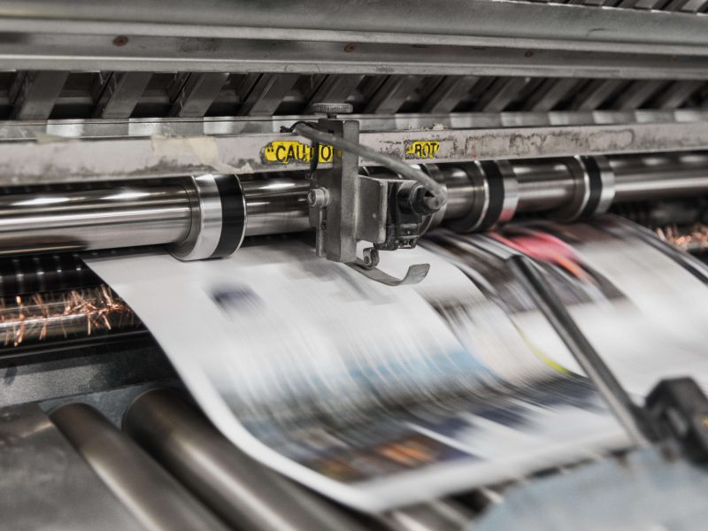

April 7, 2019
Whole Lotta Printin’ Going On

Everywhere we look there is printed material. The average 9-to-5er generates almost 10,000 sheets of paper a year, according to the EPA. That’s a lotta trees and a lotta ink! Thankfully there is a whole lot we can do to limit the impact of our printing.
First, let’s start with a round of reducing: Do I need to print this email? Would this work printed out double-sided? Could I shrink the margins? Let’s send out a postcard invite to our website instead of a catalogue. Maybe use grayscale, not full color?
Next, how about the printers themselves? A new Energy-Star rated machine uses 15-30% less power. Ideally, your printer would also have separate ink or toner cartridges for each color so that they can be refilled or recycled only as needed.
Speaking of ink, the standard variety is a toxic soup of petroleum and heavy metals. There are a few vegetable-based options, but at home it’s easiest to just limit your use. Did you know that the font you choose makes a difference? Sans Serif choices like Gill Sans and Century Gothic limit the ink needed. There is even computer software called Ecofont that can turn any print into miniature, imperceptible dots that can save your company up to 50% in ink or toner needs.
And finally, choose the highest quality paper you can find. The gold standard is 100% recycled content certified by the FSC (Forest Stewardship Council). Traditionally produced paper uses tons of chlorine that ends up in wastewater so also look for paper that is ‘TCF’ (totally chlorine free) or ‘PCW’ (processed without chlorine).
Now that’s a lotta good options to turn our printing “green”.
Photo by Bank Phrom on Unsplash